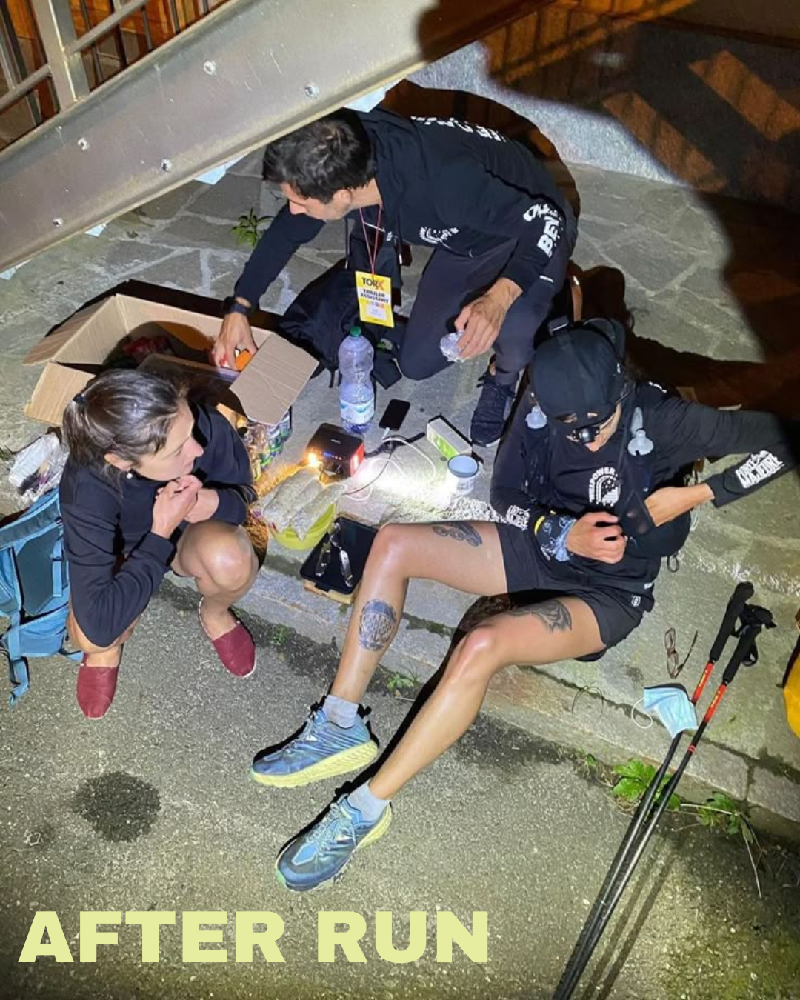

L'écosystème associatif étudiant bordelais
Avec plus de 95 000 étudiants répartis dans ses universités et grandes écoles, Bordeaux abrite un écosystème associatif particulièrement riche et diversifié. Plus de 200 associations étudiantes animent le campus et la ville, proposant des activités allant des soirées festives aux projets humanitaires, en passant par les compétitions sportives et les événements culturels.
Que vous soyez nouvel arrivant à Bordeaux ou étudiant cherchant à s'engager davantage dans la vie étudiante, ce guide vous présente les principales associations bordelaises, leur fonctionnement et comment les rejoindre.
Les différents types d'associations étudiantes
Les Bureaux Des Étudiants (BDE)
Les BDE sont les associations centrales de chaque établissement. Ils organisent les événements majeurs de l'année (intégration, gala, week-ends), fédèrent les autres associations et représentent les étudiants auprès de l'administration. Chaque école ou composante universitaire possède généralement son propre BDE, élu annuellement.
Les Bureaux Des Sports (BDS)
Les BDS se concentrent sur l'organisation des activités sportives : entraînements hebdomadaires, tournois inter-écoles, week-ends sportifs. Ils représentent souvent leur établissement lors des compétitions universitaires comme les Championnats de France Universitaires.
Les Bureaux Des Arts (BDA)
Dédiés à la culture et aux arts, les BDA proposent des ateliers créatifs, des sorties culturelles, des expositions et des spectacles. Ils permettent aux étudiants de développer leurs talents artistiques ou simplement de découvrir de nouvelles formes d'expression.
Les associations professionnelles et Junior-Entreprises
Ces structures permettent aux étudiants de mettre en pratique leurs compétences en réalisant des missions pour des clients réels. Elles organisent également des forums entreprises, des conférences et des ateliers de professionnalisation.
Les associations humanitaires et solidaires
Engagées dans des causes sociales et environnementales, ces associations mènent des actions de sensibilisation, des collectes de fonds et des missions humanitaires en France ou à l'international.
Top des associations étudiantes bordelaises par établissement
Université de Bordeaux
L'Université de Bordeaux, qui regroupe plus de 55 000 étudiants, compte plusieurs dizaines d'associations réparties sur ses différents campus.
La Fédération Atena coordonne et soutient l'ensemble des associations de l'université, tandis que l'ACEPB fédère spécifiquement les associations du campus de Pessac.
Kedge Business School
L'école de commerce bordelaise possède un réseau associatif particulièrement actif et structuré avec plus de 25 associations.
Le BDE Kedge est réputé pour l'organisation de son gala annuel, l'un des plus prestigieux événements étudiants de Bordeaux, réunissant plus de 1500 personnes au Palais de la Bourse.
Sciences Po Bordeaux
Les associations de Sciences Po se distinguent par leur engagement dans les débats de société et les questions internationales.
La Color Party organisée par le BDE est un événement phare de la vie étudiante bordelaise, inspiré du festival Holi et réunissant des étudiants de toute la ville.
ENSEIRB-MATMECA
L'école d'ingénieurs de Bordeaux INP compte des associations techniques très innovantes aux côtés des associations classiques.
Le BDE NOSCHOOL organise chaque année "La Nuit de l'Ingénieur", un événement festif aux animations décalées qui met en scène l'univers des ingénieurs.
Université Bordeaux Montaigne
Les associations de Bordeaux Montaigne sont particulièrement actives dans les domaines artistiques et culturels.
Radio Campus Bordeaux est l'une des plus anciennes radios associatives étudiantes de France et offre une expérience médiatique unique à ses membres.
Comment rejoindre une association étudiante ?
La rentrée universitaire est le moment idéal pour rejoindre une association. Voici les étapes à suivre :
1. Participez aux forums des associations
En septembre et octobre, chaque établissement organise un forum où toutes les associations se présentent. C'est l'occasion parfaite pour découvrir la diversité de l'offre associative et échanger avec les membres actuels.
2. Assistez aux événements de recrutement
Les associations organisent des réunions d'information et des événements spécifiques pour accueillir les nouveaux membres. Surveillez les réseaux sociaux et les affichages sur votre campus.
3. Contactez directement les associations
N'hésitez pas à contacter directement les associations qui vous intéressent via leurs réseaux sociaux. La plupart sont très réactives et accueillantes envers les nouveaux membres potentiels.
4. Utilisez l'application BDB
Notre application BDB vous permet de découvrir et suivre toutes les associations étudiantes de Bordeaux. Vous pouvez facilement consulter leurs événements et entrer en contact avec elles.
Les bénéfices de l'engagement associatif
S'engager dans une association étudiante présente de nombreux avantages :
- Développement de compétences : gestion de projet, travail d'équipe, communication, leadership...
- Extension de votre réseau : rencontres avec des étudiants d'autres filières et des professionnels
- Valorisation de votre CV : les recruteurs apprécient particulièrement les expériences associatives
- Découverte de nouveaux centres d'intérêt et épanouissement personnel
- Impact concret sur votre environnement et la société
De nombreux anciens responsables associatifs témoignent que leur expérience associative a été aussi formatrice que leurs études, voire davantage dans certains cas.
Conclusion
La vie associative est un pilier de l'expérience étudiante à Bordeaux. Que vous souhaitiez développer des compétences professionnelles, vous engager pour une cause qui vous tient à cœur, pratiquer une passion ou simplement faire des rencontres, vous trouverez forcément une association qui correspond à vos aspirations.
N'attendez pas pour vous engager ! Les années étudiantes passent vite, et l'expérience associative est une opportunité unique de les enrichir considérablement.
Pour découvrir et suivre toutes les associations étudiantes de Bordeaux, téléchargez l'application BDB et ne manquez aucun événement !